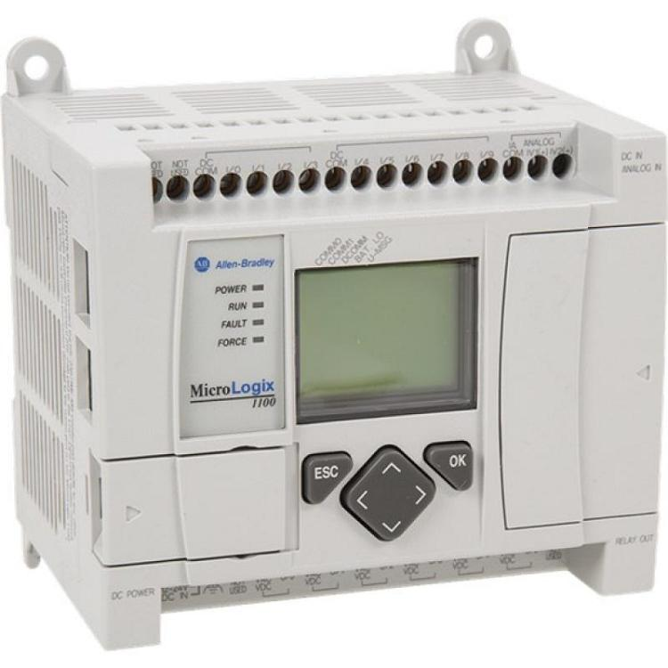
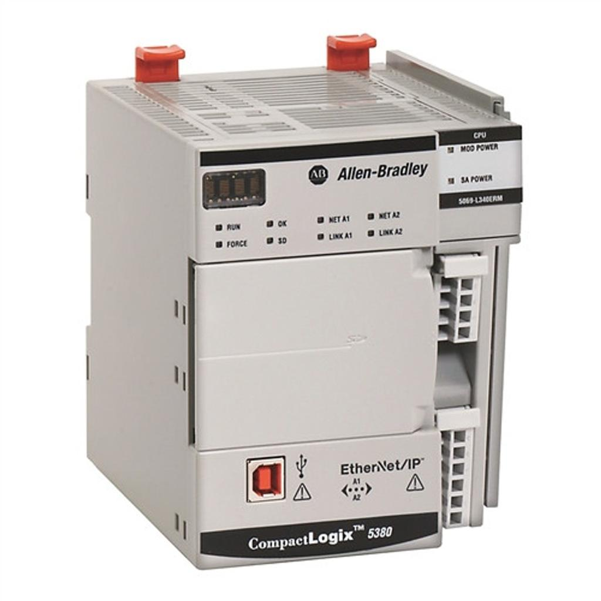
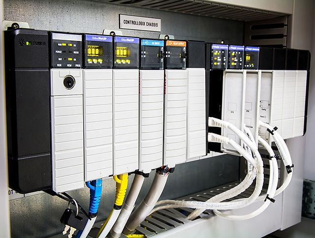

1. Definition and Purpose
Allen-Bradley is an industrial automation brand of Rockwell Automation. Its products include PLCs, industrial controllers, I/O systems, operator interfaces, drives, industrial networks, safety controllers, and engineering software.
Allen-Bradley controllers are widely used in automotive manufacturing, robotic production lines, material handling, assembly systems, machine tools, and process automation.
For this topic, the main controller families are:
- MicroLogix: Legacy micro PLC family used in smaller machines and standalone applications.
- CompactLogix: Compact industrial controller family used for machine and line automation.
- ControlLogix: Modular, high-performance controller family used in larger and more complex automation systems.
- RSLogix 500: Traditional programming software for supported MicroLogix and SLC 500 controllers.
- Studio 5000 Logix Designer: Engineering software for supported Logix controllers, including CompactLogix and ControlLogix.
The critical distinction is that MicroLogix and Logix controllers do not use the same programming architecture. Understanding the controller generation is necessary before selecting software, interpreting addresses, connecting online, or troubleshooting a program.
2. Allen-Bradley Automation Ecosystem
| Term | Meaning | Main purpose |
|---|---|---|
| Allen-Bradley | Rockwell Automation product brand | Industrial automation equipment |
| MicroLogix | Legacy micro PLC family | Small standalone machines |
| SLC 500 | Legacy modular PLC family | Machine and process control |
| CompactLogix | Compact Logix controller family | Machine and production-line control |
| ControlLogix | Modular Logix controller family | Complex machine, line and plant control |
| RSLogix 500 | Legacy programming software | Supported MicroLogix and SLC 500 controllers |
| RSLogix 5 | Legacy programming software | Supported PLC-5 controllers |
| Studio 5000 Logix Designer | Logix controller engineering software | CompactLogix and ControlLogix, plus other supported Logix platforms |
| FactoryTalk View | HMI/SCADA software family | Operator interfaces and monitoring |
| EtherNet/IP | Industrial communication technology | Controller, I/O, HMI, drive and device communication |
| POINT I/O | Distributed I/O family | Remote field input/output |
| FLEX I/O | Distributed I/O family | Modular remote input/output |
| ControlNet | Industrial control network technology | Communication in supported legacy and existing systems |
| DeviceNet | Industrial device network technology | Communication with supported field devices |
The exact combination of hardware and software depends on the controller catalog number, firmware revision, communication interfaces, and software version.
3. MicroLogix PLC Family

MicroLogix controllers were designed for small and medium-sized standalone automation applications. They remain relevant when maintaining older industrial machines.
Typical applications include:
- Small conveyor systems.
- Pump and motor control.
- Simple pneumatic fixtures.
- Standalone machines.
- Utility and auxiliary equipment.
- Small sequencing and interlocking systems.
Main characteristics
- Compact controller construction.
- Integrated I/O on many models.
- Expansion modules on supported models.
- Programming with RSLogix 500 for supported MicroLogix families.
- Traditional data-file-based addressing.
- Communication options vary by model and may include serial communication and Ethernet on selected models.
MicroLogix is a legacy product family. The exact model matters because MicroLogix 1000, 1100, 1200, 1400, and 1500 differ in features, memory, communications, and expansion capabilities.
Example of traditional addressing
A MicroLogix program may use addresses such as:
| Address | Typical meaning |
|---|---|
I:0/0 |
Input bit in input data file 0 |
O:0/0 |
Output bit in output data file 0 |
B3:0/0 |
Binary data-file bit |
N7:0 |
Integer data-file element |
T4:0 |
Timer data-file element |
C5:0 |
Counter data-file element |
These are representative examples of traditional addressing. Actual addresses depend on the controller model, I/O configuration, and program.
Maintenance point: When opening a MicroLogix project, identify the exact controller and its compatible RSLogix 500 version. Do not assume that a MicroLogix program can be imported into Studio 5000 and run unchanged.
4. CompactLogix Controller Family

CompactLogix controllers are part of the Logix controller family. They are used for machine control, production-line automation, motion applications, and distributed control.
Typical applications include:
- Conveyor and transfer systems.
- Automated assembly stations.
- Robot-cell interfaces.
- Machine-tool auxiliary systems.
- Small and medium production lines.
- Coordinated motion applications on supported models.
Main characteristics
- Programmed using Studio 5000 Logix Designer for supported controllers.
- Tag-based programming rather than the traditional MicroLogix data-file model.
- Supports controller tasks, programs, routines, and controller-scoped or program-scoped tags.
- Uses EtherNet/IP extensively, with supported communication options depending on the model.
- Supports local or distributed I/O depending on the controller and system architecture.
- Supports motion, safety, and other advanced functions on selected controller variants.
Tag-based programming
A CompactLogix project might define tags such as:
Start_Request
Auto_Mode
Drive_Ready
Interlocks_OK
Motor_Run_Command
Motor_Running_Feedback
Fault_Active
These tags are defined with data types such as BOOL, DINT, REAL, arrays, or user-defined data types.
The programmer typically works with meaningful tag names instead of directly manipulating traditional addresses such as B3:0/0.
Maintenance point: In a Logix controller, verify whether a tag is controller-scoped or program-scoped, whether the relevant routine is being executed, and whether the tag is updated by logic, I/O mapping, messaging, or an external system.
5. ControlLogix Controller Family

ControlLogix is a modular Logix controller family designed for demanding automation applications.
Typical applications include:
- Large automotive production lines.
- Complex assembly and material-handling systems.
- Multiple coordinated machine stations.
- Large distributed I/O installations.
- Advanced motion-control applications.
- Systems requiring extensive controller communication and diagnostics.
- Supported redundant or high-availability architectures.
Main characteristics
- Modular chassis-based architecture.
- Controller, power supply, and communication modules selected according to system requirements.
- Studio 5000 Logix Designer for supported controller generations.
- Tag-based programming.
- Multiple task types and execution priorities.
- Integration with distributed I/O, drives, HMIs, and other controllers.
- Safety and redundancy options on selected hardware configurations.
Not every ControlLogix controller supports every safety, motion, communication, or redundancy feature. Those capabilities depend on the exact catalog numbers, firmware, and system configuration.
Example architecture
HMI / SCADA
|
EtherNet/IP
|
+------------------+
| ControlLogix CPU |
+------------------+
| | |
Local I/O Drives Network modules
|
Remote I/O / devices
|
Sensors and actuators
The controller executes the program. Communication modules connect it to the wider system, while local or remote I/O provides the interface to field equipment.
Maintenance point
In a ControlLogix system, identify the CPU, chassis, power supply, communication modules, I/O modules, and firmware. A fault may originate in the program, controller, module, network, field wiring, drive, or another connected system.
The controller's status and diagnostic information should guide the investigation instead of replacing parts based on guesswork.
6. Comparison of MicroLogix, CompactLogix and ControlLogix
| Feature | MicroLogix | CompactLogix | ControlLogix |
|---|---|---|---|
| Product generation | Legacy | Modern Logix family | Modern Logix family |
| Typical application | Standalone small machines | Machine and line control | Complex lines and plant systems |
| Hardware arrangement | Compact controller | Compact controller with supported expansion and I/O architectures | Modular chassis-based system |
| Programming software | RSLogix 500 | Studio 5000 Logix Designer | Studio 5000 Logix Designer |
| Program model | Traditional data files and program routines | Tasks, programs, routines and tags | Tasks, programs, routines and tags |
| Data access | Address/data-file oriented | Tag-based | Tag-based |
| Common communication | Model-dependent serial and Ethernet options | EtherNet/IP and other supported interfaces | EtherNet/IP and other supported interfaces |
| I/O arrangement | Integrated and expansion I/O on supported models | Local or distributed I/O, model-dependent | Chassis and distributed I/O, configuration-dependent |
| Advanced capabilities | Model-dependent and comparatively limited | Motion and safety on selected variants | Advanced motion, safety and redundancy on selected variants |
| Key concern | Legacy support and project compatibility | Controller and firmware compatibility | Chassis, module, firmware and system compatibility |
CompactLogix and ControlLogix share the Logix programming environment, but they are not identical in hardware capabilities, system capacity, supported modules, and application suitability.
7. RSLogix 500
RSLogix 500 is the traditional programming environment for supported MicroLogix and SLC 500 controllers.
It is commonly associated with older Allen-Bradley machines that use data files, ladder logic, and traditional addressing.
Main functions
- Create and edit PLC programs.
- Configure supported controller and I/O settings.
- Define and inspect data files.
- Monitor ladder logic and data values.
- Configure timers, counters, internal bits, and integer data.
- Download and upload supported program information.
- Troubleshoot controller status and communication.
- Document program logic and symbols.
Common data-file types
| File type | Typical use |
|---|---|
I |
Input data |
O |
Output data |
S |
Status data |
B |
Binary data |
N |
Integer data |
F |
Floating-point data |
T |
Timer data |
C |
Counter data |
R |
Control data |
ST |
String data |
The exact file types, addresses, and capabilities depend on the controller and software. The table describes common traditional data-file conventions.
Typical workflow
- Open the correct RSLogix 500 project.
- Verify the controller type.
- Establish communication through the supported interface.
- Check the controller's status.
- Monitor the relevant ladder logic and data files.
- Compare the available online information with the offline project.
- Make authorized changes and verify the result.
Important: RSLogix 500 and Studio 5000 Logix Designer are different engineering environments for different controller architectures.
8. Studio 5000 Logix Designer
Studio 5000 Logix Designer is the engineering environment used to program and configure supported Logix controllers, including CompactLogix and ControlLogix.
It is the main software environment to understand when maintaining modern Allen-Bradley machine and line control systems.
Main functions
- Controller and I/O configuration.
- Tag creation and data-type definition.
- Ladder Logic, Function Block Diagram, Structured Text, and Sequential Function Chart programming where supported.
- Task, program, and routine organization.
- Online monitoring and controller diagnostics.
- Cross-reference and logic navigation.
- Controller and program tag inspection.
- Communication configuration for supported modules and devices.
- Project verification, upload, download, and comparison features as supported by the controller and software version.
Project structure
A typical Logix project uses a hierarchy such as:
Controller
|
+-- Controller Tags
|
+-- Tasks
|
+-- Programs
|
+-- Program Tags
|
+-- Routines
|
+-- Main Routine
+-- Motor Routine
+-- Alarm Routine
+-- Sequence Routine
This structure is important because a routine existing in the project does not guarantee that it is being executed. The task and program configuration determines how program logic runs.
Tasks
A task defines when and how a set of programs executes.
Common task types include:
- Continuous task: Executes repeatedly when processor time is available.
- Periodic task: Executes at a configured interval.
- Event task: Executes in response to supported configured events.
Task support and scheduling behavior depend on the controller. Task configuration can affect execution timing, priorities, and responsiveness.
Programs and routines
- Program: Organizes related routines and program-scoped tags.
- Routine: Contains executable logic in a supported programming language.
- Main routine: Entry point for a program's routine execution.
- Subroutine or called routine: Executes when invoked by the program logic.
- Controller tags: Available at controller scope.
- Program tags: Available within their defined program scope, subject to supported access rules.
Logix data types
| Data type | Typical use |
|---|---|
BOOL |
Binary state |
SINT |
8-bit signed integer |
INT |
16-bit signed integer |
DINT |
32-bit signed integer |
LINT |
64-bit signed integer on supported controllers |
REAL |
Floating-point value |
STRING |
Text data |
TIMER |
Timer structure on supported Logix platforms |
COUNTER |
Counter structure on supported Logix platforms |
ARRAY |
Collection of elements |
| UDT | User-Defined Data Type |
| AOI | Add-On Instruction, a reusable instruction definition |
Not every data type or feature is available on every controller generation. Use the target controller's supported data types and instructions.
9. Important Ladder Logic Instructions
Allen-Bradley ladder logic represents control logic using rungs containing conditions and instructions.
Common instructions include:
| Instruction | Common mnemonic | Purpose |
|---|---|---|
| Examine If Closed | XIC | Tests whether a Boolean tag is true |
| Examine If Open | XIO | Tests whether a Boolean tag is false |
| Output Energize | OTE | Sets a Boolean destination according to rung execution |
| Output Latch | OTL | Sets a Boolean destination when the instruction executes true |
| Output Unlatch | OTU | Clears a Boolean destination when the instruction executes true |
| Timer On Delay | TON | Implements an on-delay timer |
| Counter Up | CTU | Increments a counter |
| Move | MOV | Copies a value |
| Compare | EQU, NEQ, GRT, LES and others | Compares values |
| Jump to Subroutine | JSR | Calls a supported routine |
Instruction behavior depends on execution context, controller generation, and instruction semantics. For example, an OTE is generally updated according to rung execution and is not equivalent to a retained latch.
XIC and XIO are not simply physical contact types
- XIC evaluates whether its referenced Boolean value is true.
- XIO evaluates whether its referenced Boolean value is false.
They do not directly tell you whether the physical field device uses a normally open or normally closed contact. The input wiring, signal polarity, tag meaning, and program logic determine the overall behavior.
This distinction is important during breakdown analysis. A rung can contain an XIC instruction referring to a tag named Guard_Closed, even when the physical safety device's electrical arrangement requires a different interpretation.
10. UDTs and Add-On Instructions
User-Defined Data Types (UDTs)
A UDT defines a reusable structure containing related data members.
For example, a motor UDT might contain:
Motor_Data
Start_Command BOOL
Stop_Command BOOL
Running_Feedback BOOL
Drive_Ready BOOL
Fault_Active BOOL
Speed_Reference REAL
Speed_Feedback REAL
This is an illustrative structure, not a complete motor-control design.
The same UDT can be used to create tags for multiple motors. This makes the project easier to standardize and maintain.
Add-On Instructions (AOIs)
An AOI packages reusable logic into a custom instruction.
Typical applications include:
- Standard motor control.
- Common alarm processing.
- Drive interface logic.
- Valve control.
- Equipment status calculation.
AOIs can help enforce consistent logic across machines, but their internal implementation, parameters, revisions, and permissions must be understood before modification.
11. EtherNet/IP and Communication Architecture
EtherNet/IP is a major industrial communication technology used in Allen-Bradley systems.
It uses the Common Industrial Protocol (CIP) over standard Ethernet and supports communication among compatible controllers, I/O, drives, HMIs, and other devices.
Typical applications include:
- Controller-to-controller data exchange.
- Controller-to-remote-I/O communication.
- Drive command and feedback communication.
- HMI data access.
- Device diagnostics.
- Messaging between supported controllers.
Common communication terms
| Term | Meaning |
|---|---|
| EtherNet/IP | Industrial communication technology using CIP over Ethernet |
| CIP | Common Industrial Protocol |
| IP address | Network-layer address |
| Subnet mask | Defines the local IP network boundary |
| Gateway | Routes traffic to other IP networks |
| Produced tag | Tag data made available for consumption by configured compatible controllers |
| Consumed tag | Tag data received from a producing controller |
| MSG instruction | Message instruction for supported data exchange |
| RPI | Requested Packet Interval for supported I/O connections |
| EDS file | Electronic Data Sheet describing supported device characteristics |
RPI and I/O timing
The Requested Packet Interval defines a requested update interval for supported cyclic I/O connections.
A smaller RPI may increase communication traffic and processing demand. The appropriate value depends on the application, network, device, controller, and timing requirements.
RPI is not the same thing as the PLC task period or the physical machine cycle time.
Communication troubleshooting
- Confirm the controller and device IP addresses.
- Check the physical link and switch ports.
- Verify subnet and routing configuration.
- Check the I/O tree and module status.
- Inspect connection faults and controller diagnostics.
- Verify the configured device and communication settings.
- Check RPI and network load where relevant.
- Confirm whether the issue affects one device or multiple devices.
Do not assume that a ping response proves the industrial I/O connection is healthy. Basic IP connectivity and a functioning EtherNet/IP I/O connection are different conditions.
12. Online, Offline, Upload and Download
| Operation | Meaning | Main caution |
|---|---|---|
| Offline editing | Changes made in the engineering project without changing the running controller | Project may differ from the live system |
| Go Online | Connects engineering software to the controller | Verify the correct controller and path |
| Upload | Retrieves supported controller information into an engineering project | May not recreate all original source documentation |
| Download | Transfers project information to the controller | Can affect running control and may require a mode change |
| Online monitoring | Displays live tag values or logic state | Confirm correct tag and execution context |
| Compare | Identifies differences between supported online/offline components | Review differences before applying changes |
| Force | Overrides supported I/O or values for testing | Can cause hazardous machine behavior |
| Modify value | Changes a tag value where supported and permitted | Can alter machine behavior immediately |
Before downloading
- Confirm the exact controller.
- Confirm the project revision.
- Review online/offline differences.
- Verify the controller firmware and software compatibility.
- Check whether a download requires a transition to a different operating mode.
- Obtain authorization and follow production and safety procedures.
- Preserve a known-good backup and change record.
Upload is not the same as a complete backup. A project retrieved from the controller may lack comments, symbolic information, libraries, or other engineering assets needed to maintain the system properly.
13. Practical Breakdown Example: Robot Station Not Running
Consider a robot station in an automotive production line. The robot controller reports that it is ready, but the station PLC does not issue the run command.
Possible Logix tags include:
Robot_Ready
Auto_Mode
Safety_OK
Part_Present
Station_Interlocks_OK
Robot_Run_Request
Robot_Running
Robot_Fault
The intended permissive logic might be represented as:
Robot_Run_Request =
Auto_Mode
AND Safety_OK
AND Part_Present
AND Station_Interlocks_OK
AND Robot_Ready
AND NOT Robot_Fault
This is a simplified diagnostic model. Actual robot and safety interfaces must follow the approved machine design.
Troubleshooting procedure
- Verify the controller is in the expected operating mode.
- Monitor
Robot_Readyand check the robot controller's own status. - Verify
Auto_Mode. - Check the safety system's approved status indicators without bypassing safety functions.
- Check
Part_Presentand the station's other interlocks. - Monitor
Station_Interlocks_OKand trace the condition preventing it from becoming true. - Check
Robot_Run_Request. - If the command is present, investigate the PLC-to-robot interface and robot-side permissives.
- Verify the robot running feedback and any communication or interface faults.
- Record the fault, root cause, correction, and verification.
The central principle is to follow the signal from the source to the final action. Replacing a PLC or robot controller without establishing where the signal path fails is expensive guesswork dressed up as maintenance.
14. Common Problems and First Checks
| Problem | Possible cause | First checks |
|---|---|---|
| Cannot connect online | Wrong path, network interface, IP configuration or communication driver | Verify the communication path and network settings |
| Controller in faulted mode | Program, hardware, task, or other controller fault | Read controller status and fault information |
| I/O module fault | Incorrect configuration, lost connection, hardware fault or wiring problem | Check module status and I/O tree |
| Tag does not change | Logic condition false, routine not executing, incorrect tag scope or data source | Monitor the tag and trace the routine |
| HMI value incorrect | Tag mapping, scaling, communication, or data-type issue | Compare HMI and controller values |
| Remote I/O unavailable | Network or connection issue, module configuration mismatch | Check IP settings, module status and connection diagnostics |
| Program download fails | Firmware mismatch, unsupported hardware, access protection or software version issue | Verify controller compatibility and download messages |
| Unexpected output state | Logic, latch, force, external command, or wiring issue | Inspect logic, forces, output status and field wiring |
| Robot handshake stuck | Missing permissive, mismatched interface bit, stale feedback or robot-side fault | Trace each handshake condition on both systems |
| Legacy project will not open | Incorrect software version or missing compatibility components | Identify the controller and required engineering software |
15. Legacy Controller Considerations
Older Allen-Bradley systems may include MicroLogix, SLC 500, and PLC-5 controllers. These should not be treated as a single interchangeable platform.
| Family | Common software | General architecture |
|---|---|---|
| MicroLogix | RSLogix 500 | Compact controller, traditional data files |
| SLC 500 | RSLogix 500 | Modular controller, traditional data files |
| PLC-5 | RSLogix 5 | Legacy controller family with its own architecture |
| CompactLogix | Studio 5000 Logix Designer for supported models | Logix tasks, programs, routines and tags |
| ControlLogix | Studio 5000 Logix Designer for supported models | Logix tasks, programs, routines and tags |
When modernizing a legacy machine, the engineering work may include more than translating ladder logic. It may require redesigning I/O mapping, data types, communication, task execution, HMI interfaces, safety systems, and commissioning tests.
A successful conversion is one that preserves the required machine behavior and safety functions, not merely one that compiles.
16. Safety and Change Control
Allen-Bradley offers safety controller variants and safety-related products for supported applications.
Important practices include:
- Identify whether the controller is standard or safety-rated.
- Confirm the safety hardware and program configuration.
- Follow the approved safety validation process.
- Do not bypass safety interlocks to restore production.
- Use forcing and value modification only in authorized, controlled test conditions.
- Back up the correct project before making changes.
- Document program revisions and field verification.
- Validate the machine's response after approved changes.
A safety-related PLC modification must be treated as an engineered safety change, not an ordinary ladder-logic edit.
17. Interview Questions and Answers
Q1. What is the difference between MicroLogix and CompactLogix?
MicroLogix is a legacy micro PLC family commonly programmed using RSLogix 500 and traditional data-file addressing. CompactLogix is part of the Logix family, uses Studio 5000 Logix Designer on supported models, and uses tag-based programming with tasks, programs, and routines.
Q2. What is the difference between CompactLogix and ControlLogix?
Both use the Logix controller architecture and Studio 5000 for supported models. CompactLogix is generally suited to compact machine and line applications, while ControlLogix supports larger modular systems and more extensive configurations. The exact capabilities depend on the controller model.
Q3. What is the difference between RSLogix 500 and Studio 5000?
RSLogix 500 is used for supported MicroLogix and SLC 500 controllers. Studio 5000 Logix Designer is used for supported Logix controllers, such as CompactLogix and ControlLogix. Their project structures, addressing models, and programming architectures differ.
Q4. What is a controller tag?
A controller tag is a named variable defined at controller scope in a Logix project. It can be referenced by supported programs and routines according to the platform's access rules.
Q5. What is a program-scoped tag?
A program-scoped tag belongs to a specific program and is generally used within that program. Its scope matters when examining logic, HMI access, or inter-program communication.
Q6. What is the difference between a task, program, and routine?
A task schedules execution. A program organizes related routines and program-scoped tags. A routine contains the actual executable logic.
Q7. What is a UDT?
A User-Defined Data Type defines a reusable structure of related data members. It can standardize the representation of equipment such as motors, valves, or robot interfaces.
Q8. What is an AOI?
An Add-On Instruction is a reusable custom instruction definition that packages logic and associated parameters for repeated use in supported Logix systems.
Q9. What is EtherNet/IP?
EtherNet/IP is an industrial communication technology that uses CIP over Ethernet to support data exchange among compatible controllers and devices.
Q10. Why can a controller be online but an I/O device still be faulted?
The controller's engineering connection may work even when a separate I/O connection is unavailable. The cause may be device configuration, IP settings, connection parameters, module faults, network issues, or incompatible hardware.
Q11. What is the difference between a force and a normal command?
A normal command is produced by the control logic or a permitted external interface. A force overrides supported I/O behavior for testing or troubleshooting and can bypass the expected logic path. Forces require strict authorization and verification.
Q12. What should be checked before replacing a PLC?
Confirm the exact controller model, firmware, project revision, hardware configuration, communication settings, I/O mapping, safety configuration, and backup. Also establish whether the fault actually originates in the controller.
18. Practical Study Exercises
Use a simulator or an approved training PLC.
- Identify the controller family, catalog number, firmware, and communication interface.
- Determine whether the project uses RSLogix 500 or Studio 5000 Logix Designer.
- Locate the main task, program, and routine in a Logix project.
- Find controller-scoped and program-scoped tags.
- Create a small motor-permissive example using Boolean tags.
- Monitor tag values and trace a condition preventing the output command.
- Inspect controller and I/O module diagnostics.
- Identify the communication path to a remote I/O adapter.
- Create a UDT for a training motor and use it for two separate motor instances.
- Back up the project and document the controller and firmware information.
Do not use a live production controller for experimentation without the required authorization.
19. Final Mental Model
Engineering software
|
+-- RSLogix 500
| |
| +-- MicroLogix / SLC 500
| +-- Traditional data files and addressing
|
+-- Studio 5000 Logix Designer
|
+-- CompactLogix / ControlLogix
|
+-- Tasks
+-- Programs
+-- Routines
+-- Tags / UDTs / AOIs
|
v
Controller execution
|
v
EtherNet/IP and I/O
|
v
Sensors, drives, robots and actuators
For maintenance, identify the controller generation, open the correct project in the correct software, establish the right online connection, inspect diagnostics, and trace the logic from input conditions to output commands.
For development, understand the task structure, tag scope, data types, reusable logic, communication configuration, and controller limits before designing or modifying the system.
Next topic: 03_Mitsubishi - Mitsubishi: FX, Q, iQ-R series, GX Works